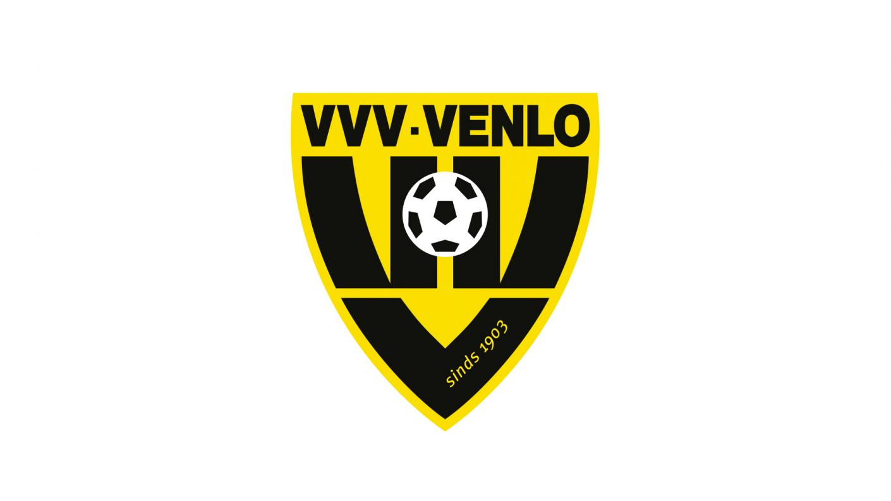

Ik ben zelf momenteel een Professionele Esporter voor VVV-Venlo. Ik speel het spel Rocket League en sta 3rde van heel nederland. Ik doe ook vaak mee met grootte tournementen waarmee ik geld kan verdienen. Dit doe ik naturlijk niet alleen, maar met mijn team waar ik later meer over ga vertellen.
VVV Venlo is sinds vorig seizoen uit de eredivisie gestapt waardoor ik en mijn team nu de kans hebben gekregen om esporter te worden voor VVV Venlo. Dit was natuurlijk een kans die wij niet wilde missen en zijn sinds onze kwalificatie voor de KeukenKampioen Divisie officiele esporters voor Venlo.
De KeukenKampioen Divisie is in heel nederland nogal bekend aangezine het op de tv te zien is en er op de radio veel over gepraat word. Ik en mijn team spelen elke donderdag 1 of 2 series van 2 wedstrijden per serie. Als je verliest krijg je 0 punten, als je gelijkspel speelt krijgen beide teams 1 punt en als je wint krijgt het team 3 punten. Wij staan momenteel in de top 6 van de in totaal 20 teams.
Ons doel in de KeukenKampioen Divisie is om top 6 te eindigen aangezien de top 6 teams uiteindelijk tegen elkaar spelen om voor de winst te gaan. Voirge periode eindigde wij als 9de, wat nogsteeds en prestatie is, maar wij gaan natuurlijk nu voor die eerste plek. Alle spelers die meedoen zijn erg goed waardoor het winnen van wedstrijden erg lastig is, sommige teams die in de competitie zitten hebben ook meegedaan aan het Rocket League Championships ( wat erg lastig is om in te komen ).